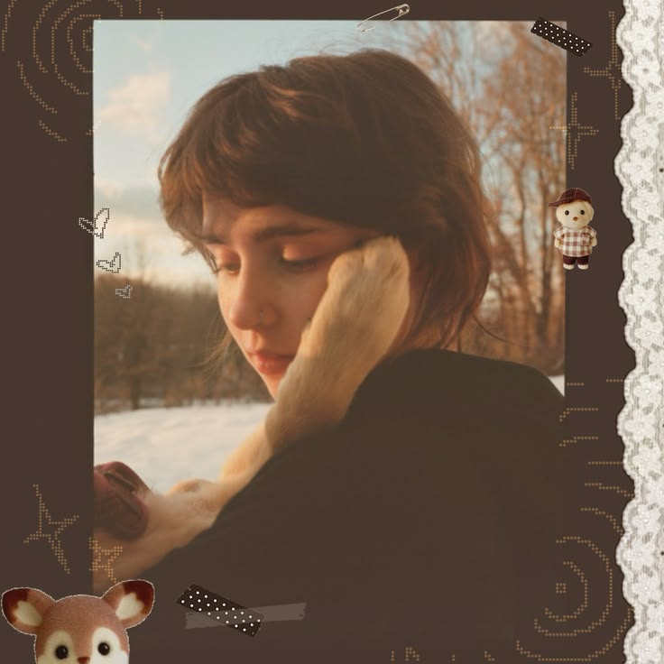
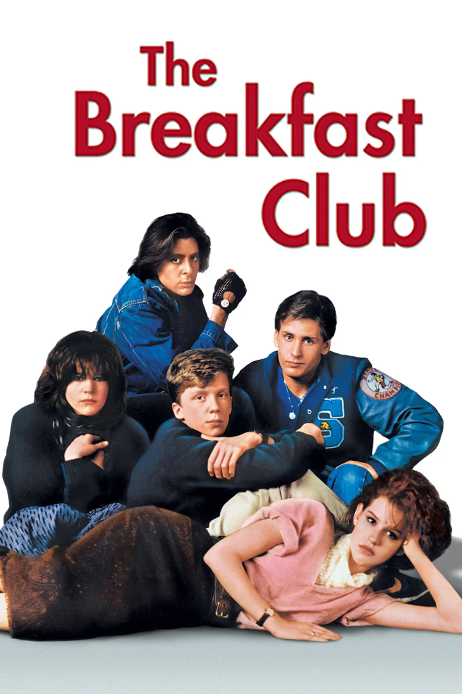
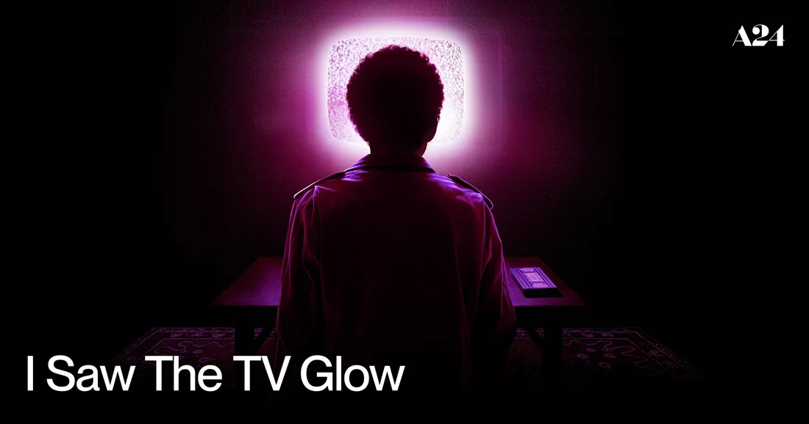
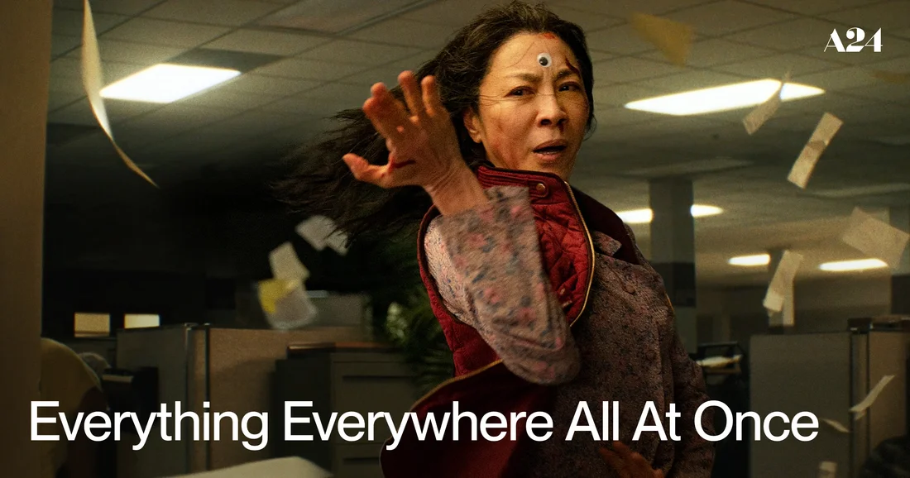

A LITTLE MESS, ENTIRELY MINE
hi, i'm
loveyy.
A person with too many tabs open in her brain. I make things, collect feelings from songs and films, get lost in imaginary worlds, and occasionally remember to finish a project.
musician-ish · maker · daydreamer
currently transmitting from Mars
THAT FEELS LIKE YOU.— note to self, probably

sound on, world offAN OPEN SCRAPBOOK / ALWAYS TURNING
01 / THE ARTIST PAGES
artists i live inside.
Clairo, Radiohead, Olivia O., Fontaines D.C., and the other artists on repeat lately. Portraits, record sleeves, and a little bit of everything, kept in rotation.

02 / THE FILMS PAGES
frames i keep.
The Breakfast Club shaped something in me, especially Allison and Claire. From Dead Poets Society to I Saw the TV Glow: these are the films I keep close.

The Breakfast Cluballison & claire / a little bit of me ↗
I Saw the TV Glowa favorite / kept close ↗
Everything Everywhere All at Oncea favorite / kept close ↗THE KEEP-CLOSE LIST / FAVORITES
- Tarantino's movies
- Dead Poets Society
- Lady Bird
- Good Will Hunting
- I Saw the TV Glow
- Everything Everywhere All at Once
- Inception
- The Dark Knight trilogy
- TENET
- The Breakfast Club
- Trainspotting
- T2 Trainspotting
the watched shelf ↓
Watched, with franchises kept together. The favorites live above.
- TENET
- Dead Poets Society
- Good Will Hunting
- Kill Bill Vol. 1
- Once Upon a Time in Hollywood
- Django Unchained
- Oppenheimer
- Spider-Man (Tom Holland franchise)
- Spider-Man: Into the Spider-Verse
- Spider-Man: Across the Spider-Verse
- Interstellar
- Heat
- One Battle After Another
- 007 (Daniel Craig films)
- Novocaine
- Heretic
- Tetris
- Kingsman trilogy
- The Wolf of Wall Street
- Whiplash
- V for Vendetta
- The Grand Budapest Hotel
- Fight Club
- Reservoir Dogs
- Inglourious Basterds
- A Fistful of Dollars
- For a Few Dollars More
- Project Hail Mary
- Pulp Fiction
- Sunshine
- Trainspotting
- T2 Trainspotting
- Hot Fuzz
- I Saw the TV Glow
- The Master
- Children of Men
- The Drama
- There Will Be Blood
- Baby Driver
- John Wick franchise
- Everything Everywhere All at Once
- Knives Out trilogy
- Sicario
- Dune: Part One
- Dune: Part Two
- Blade Runner 2049
- Bullet Train
- Drive
- The Batman
- Lady Bird
- Inception
- The Dark Knight trilogy
- The Breakfast Club
03 / THE OTHER WORLDS PAGES
somewhere else.
Night City, the Oldest House, the end of the road. Worlds to disappear into, and reasons to build my own.
IN THE MARGINS / THE REFERENCE SHELF
NOT A DEFINITIVE LISTthings that made me feel something.
Not a ranking. Not a personality test. Just a few artists and worlds that have left fingerprints on me.
the good stuff sticks around ↗Clairo · Radiohead · Olivia O. · Fontaines D.C. · Lowertown · beabadoobee · Feist · TV Girl · Wallows · Maya Hawke · Alex G · Angus & Julia Stone · Mazzy Star · Broken Social Scene
Death Stranding · Cyberpunk 2077 · Control · Life Is Strange · surreal places, lonely roads, beautiful ruins
Analog textures · guitar sounds · odd little websites · character-driven stories · late-night thoughts · things that are a bit hard to explain
04 / WORK IN PROGRESS
WIP IS A VALID STATE OF BEINGi make things
because i can't not.
Music, software, game ideas, half-written stories. Different ways of trying to make the inside of my head exist somewhere outside it.
visit the workbench ↗A LITTLE NOTE BEFORE YOU GO
you made it this far.
That is either very sweet or you have excellent procrastination skills. Both are welcome here.